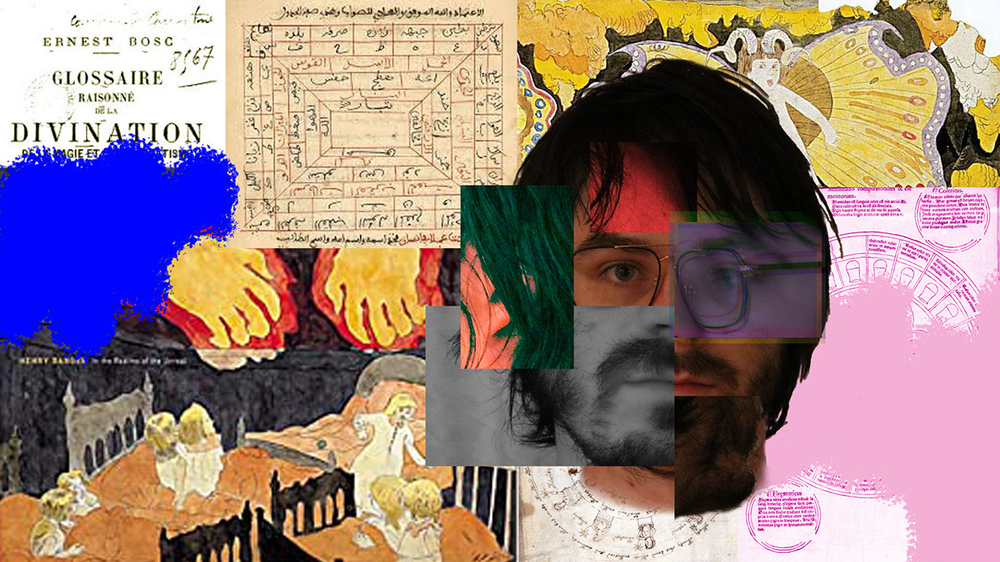
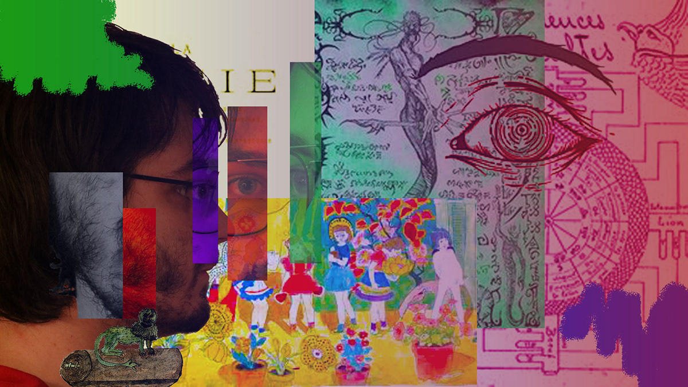
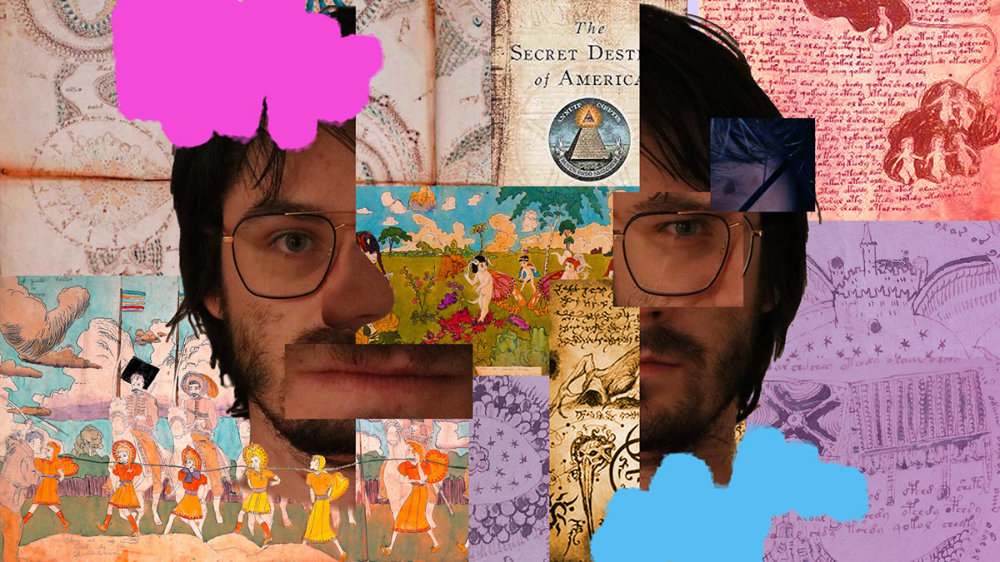
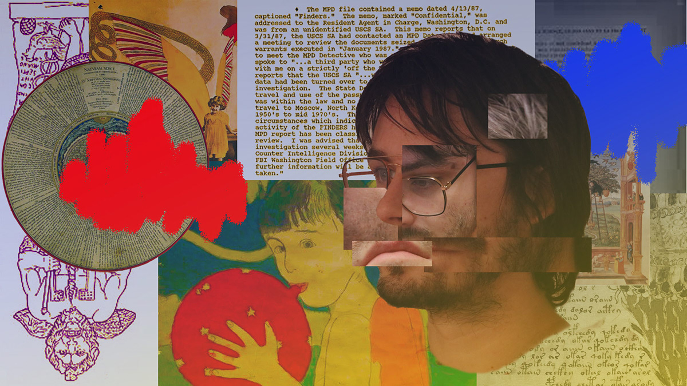
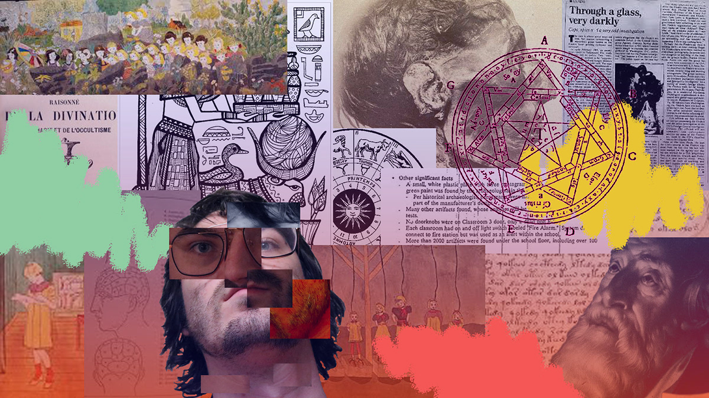
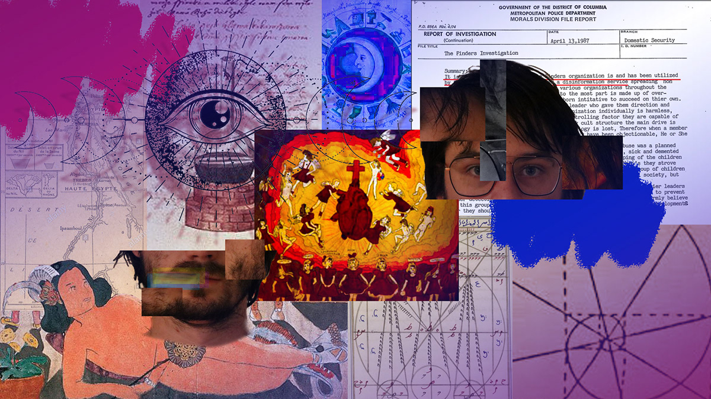

Il
Ce projet a été réalisé dans le cadre d'un cours de conception video.
Le but de notre projet était de présenter une scène de radiodiffusion conspirationiste. Ma contribution dans ce travail fut au niveau de la conception, de la direction artistique et du montage video.
Maniac
Ce projet fut réalisé pour un travail sur le keying, dans le cadre d'un cours de conception vidéo.
Pour ce projet, j'ai participé à la conception et j'ai occupé les postes de directeur artistique et de monteur.
Autoportrait






Ce projet fut réalisé dans le cadre d'un cours de création d'images matricielles.
Le but du projet était de faire une série d'autoportraits.
L'oeuvre est réalisée avec photoshop.
micro-montage


Ce projet est un montage de divers sons enregistrés par mes collègues et moi-même.
Le but du projet était de créer un narratif sonore.
L'oeuvre est un crescendo de sons abstraits.
Dada Sonore
Ce projet est un montage sonore en temps réel, créé à partir d'un enregistrement.
celui-ci est un extrait du recueil de poême Dada 2.
Les poêmes en question sont "Rasoir Mécanique" et "Pour Dada" de Pierre Albert-Birot.
Pour créer le montage en temps réel, j'ai fait passer l'enregistrement dans plusieurs pistes sonores, chacune ayant une série d'effets différents. Ces pistes ont ensuite été enchaînées pour créer l'oeuvre.